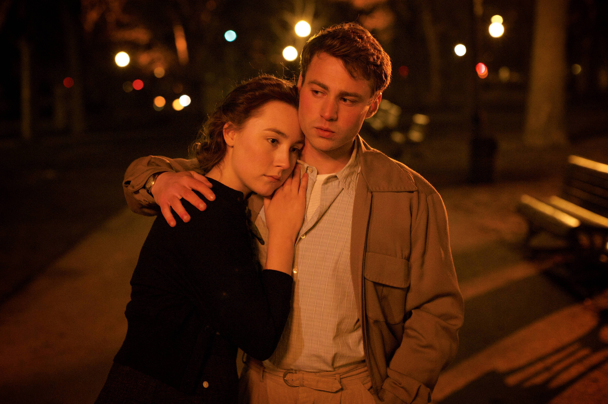
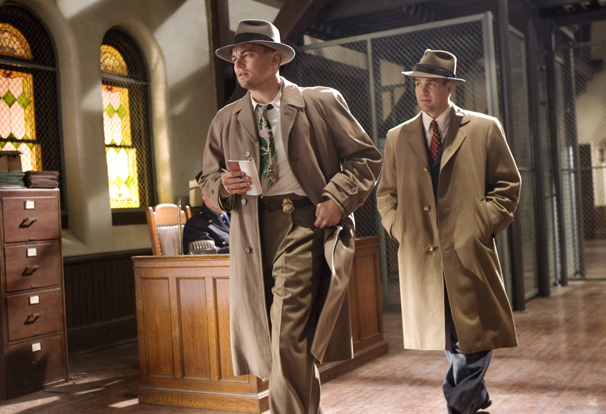
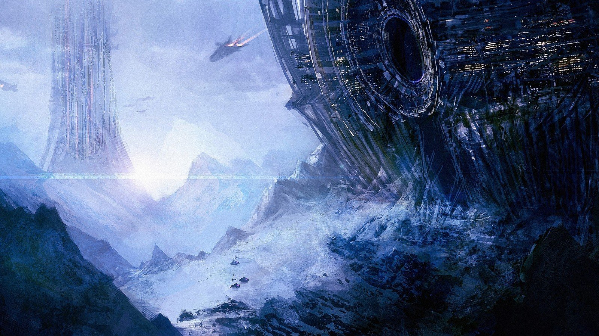

ДРАМА – более серьезный жанр драматического произведения по сравнению с комедией. В основе драмы лежит драматический конфликт между героем и обществом. Драматическое несовпадение представлений героя, его социального положения и статуса с общепринятыми нормами общества и рождает драматический конфликт (то есть, герой неудовлетворен своим положением в обществе, своим социальным статусом, который мешает ему в осуществлении своих желаний). Он может быть разрешен, если герой совершит определенный выбор, то есть войдет в резонанс с общепринятыми моделями поведения, примет общественные нормы жизни.
Драма как жанр начала развиваться в 18 веке, вытеснив собой трагедию.

Драма изображает личность в ее драматических отношениях с обществом и в тяжелых переживаниях. Правда, в драме всегда существует возможность благополучного разрешения конфликта.
Драма описывает людей, их взаимоотношения с миром и друг другом. Однако этот жанр в отличие от эпоса направлен не на повествование, а на диалог.Для этого жанра характерны острые ситуации, которые побуждают главных героев к действиям и выплескиванию своих эмоций.Писателями, творившими в этом жанре, были Островский, Ибсен, Чехов, Метерлинк, Беккет и другие.
Детективы
ДЕТЕКТИ́В (от англ. detective – сыщик, от лат. detego – открывать, расследовать), разновидность приключенческого жанра прозы и кинематографа. Термин «Д.» появился в нач. 20 в.; ранее использовались термины «судебный роман», «криминальный роман» и др. В основе Д. – история расследования и раскрытия преступления. В ходе повествования обычно выдвигаются неск. версий случившегося, которые могут исходить как из нескольких инстанций (противопоставление офиц. расследования и разысканий частного детектива; версий, принадлежащих разл. героям повествования), так и из одной (версии последовательно разрабатываются одним сыщиком). Развязка содержит эффект неожиданности: истинной оказывается либо некая новая версия, либо наименее вероятная из рассматриваемых.

Фантастика
ФАНТА́СТИКА (от греч. phantastike — искусство воображать) — особый жанр художественной литературы, объединяющий произведения, в которых повествуется о событиях, мирах и героях, нарушающих границы реальности.

Характерные черты фантастики:
фантастическое допущение — жанрообразующий элемент, противопоставленный реалистическому допущению, который не противоречит законам действительности;
фантастический тип образности — нарушение пропорций и форм изображаемого предмета;
установка на вымысел, нарушение законов реальности;